StepCat Quick Start Guide
Quick Start • Illustrated Guide
StepCat Calculator v250.1
Enter a projected or finalized result, save it, and copy the matching A–M row into the Profitability Analysis workbook.
1. Enter the record information
Add the game name, dates, date format, and Payment / Record Type. Optional fields may remain blank when they do not apply.
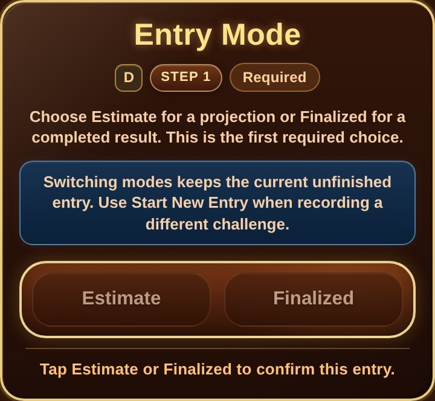
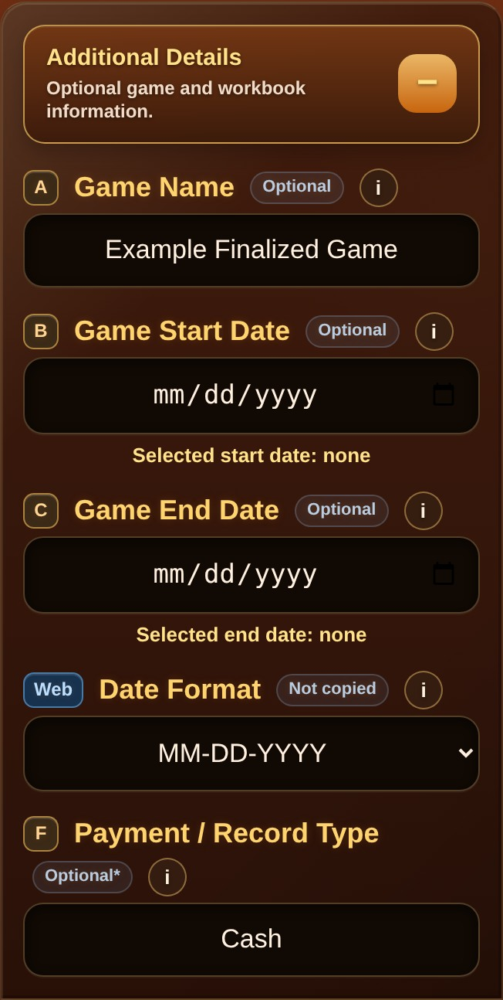
2. Confirm membership and enter calculation details
Tap Member or Non-Member to confirm the current entry. Non-Member uses 85% of Gross Pot; Member uses 100%.
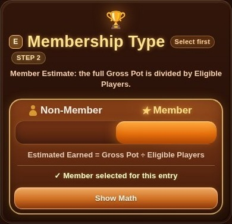
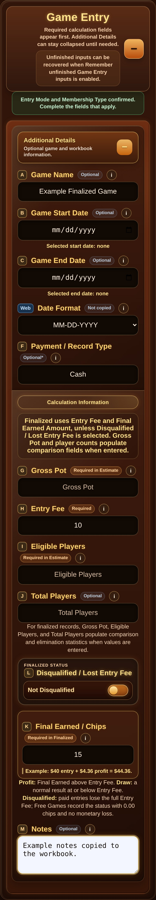
3. Complete a finalized result
Finalized mode uses the official total returned. Enter the full Final Earned amount, not only the extra profit.
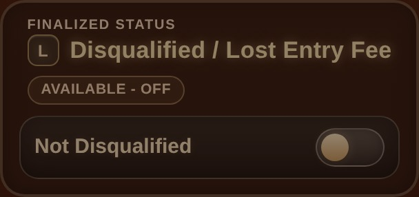
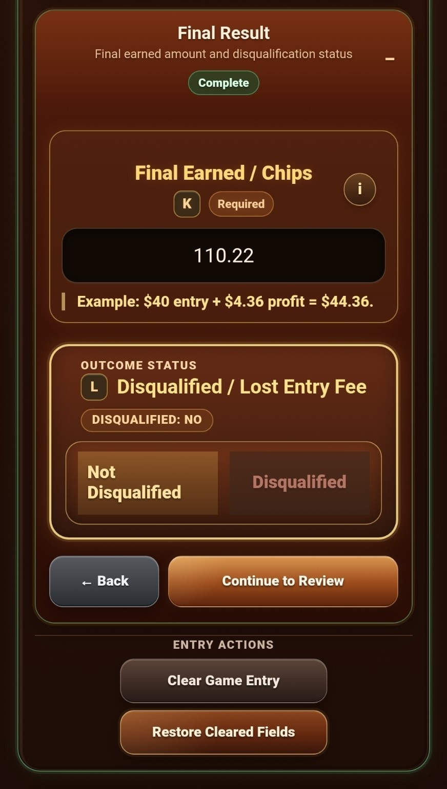
4. Add notes, then calculate and save
Use Notes for details such as a Hybrid cash-and-points breakdown. Calculate & Save validates the entry and stores one Saved History result.
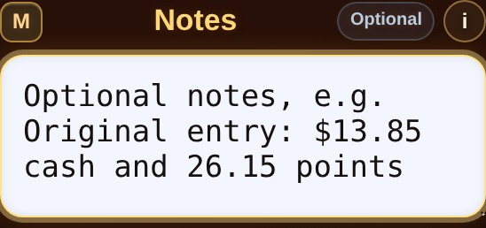
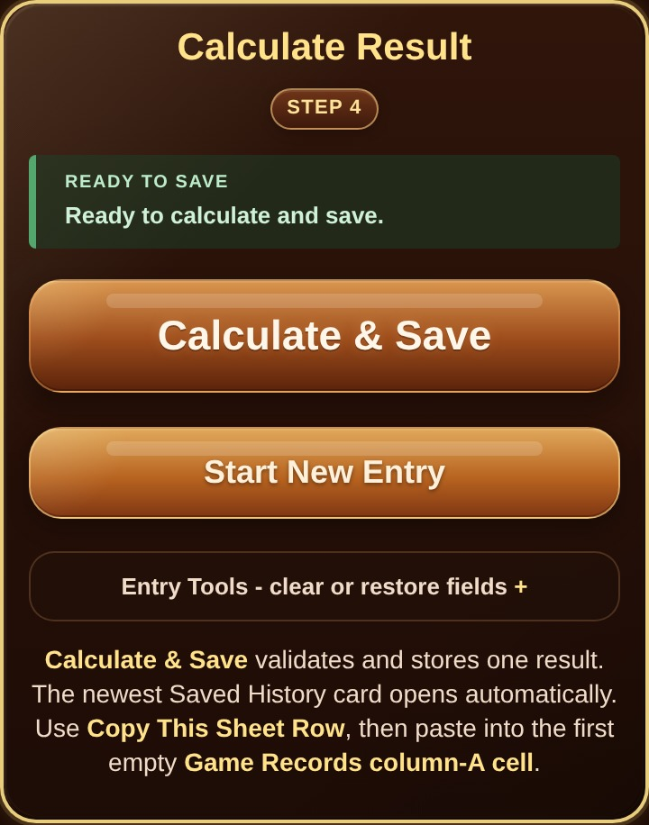
5. Review Saved History
The newest saved result opens automatically. Review the outcome, official amount, profit or draw, ROI, record details, and reference estimate.
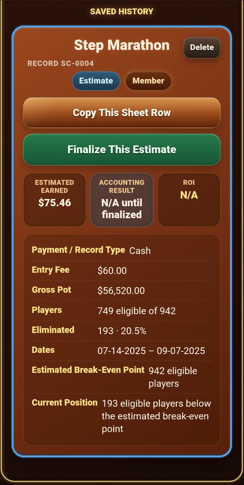
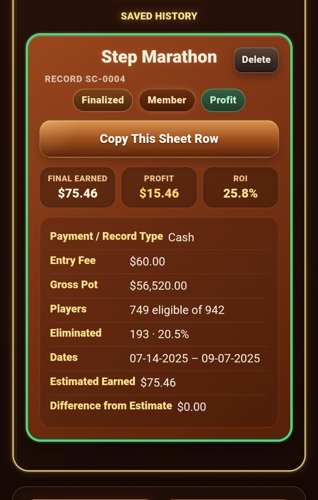
6. Copy the row into the workbook
- Tap Copy This Sheet Row.
- Open your native StepCat Google Sheet and go to Game Records.
- For a new record, select the next prepared blank cell in column A, beginning with A5.
- For a forgotten game, select a cell inside the table near the correct location and choose Insert row above or Insert row below.
- Paste into column A only so the copied row fills A–M. Do not paste over formula columns N–Z.
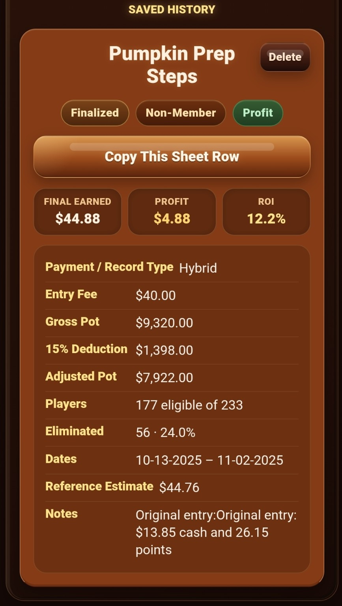
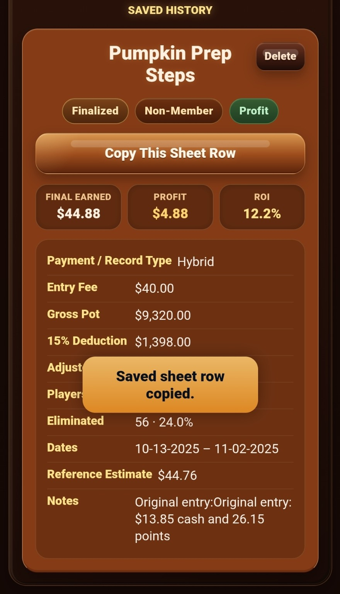
7. Make your own Google Sheets copy
- If Google asks which account to use, select the account where you want your StepCat copy stored. The account list comes from accounts already signed in on your device; other users see only their own accounts.
- Tap Make a StepCat Google Sheets Copy.
- In Google Sheets, choose Make a copy. You may keep the suggested title or rename it.
- The copy saves to My Drive by default. To choose another folder, tap the arrow beside Folder, select any folder in your Google Drive, and tap Select.
- Tap OK to create the editable native Google Sheets workbook.
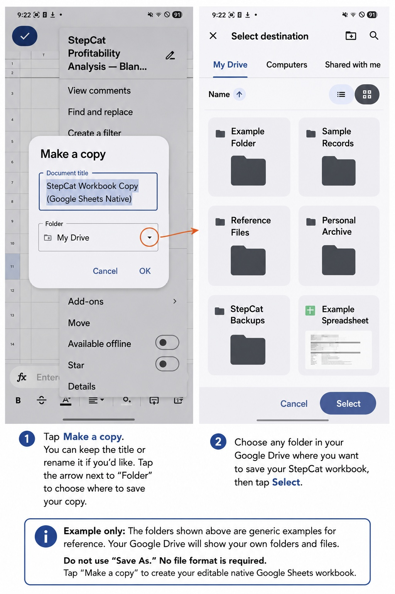
8. Follow the workbook instructions
The Instructions sheet explains where to enter records and which columns calculate automatically. Game Records rows 1–4 remain compact and frozen.
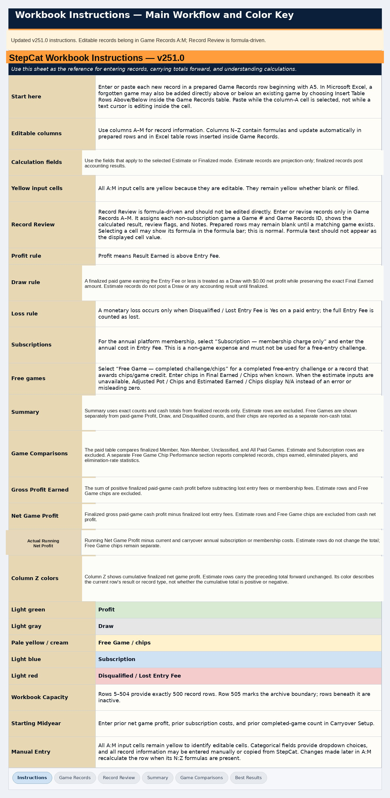
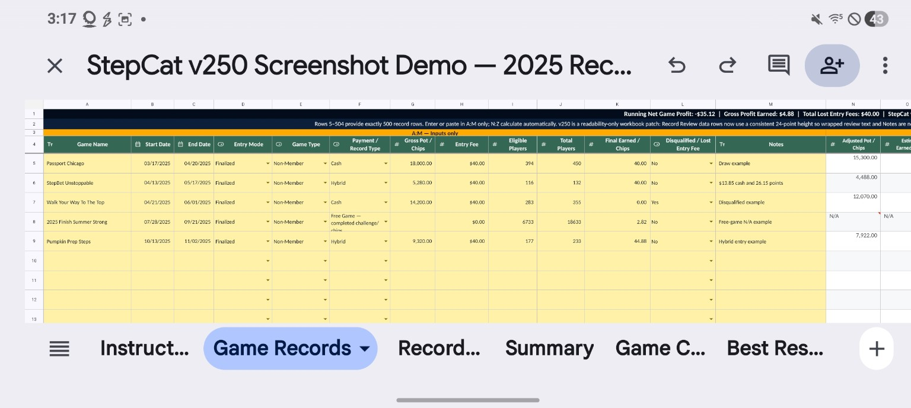
9. Enter values in A–M and leave N–Z intact
The frozen headings remain visible while scrolling. Enter or paste only in the yellow A–M area; the N–Z formula columns calculate automatically.
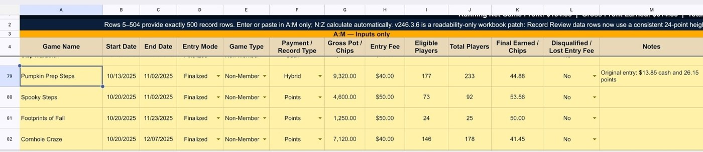
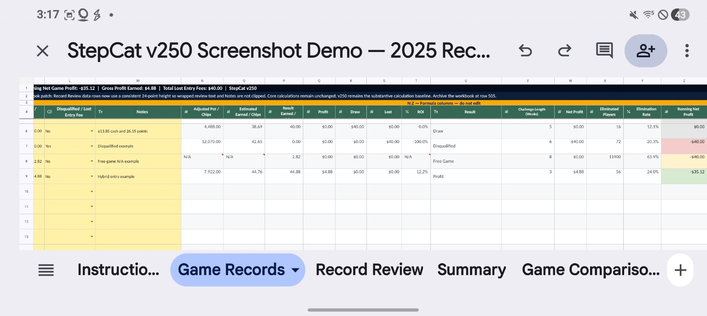
10. Use Record Review to check the workbook
Record Review lists each non-subscription game, identifies the calculated result, flags fields that may deserve attention, mirrors Notes, and summarizes results.
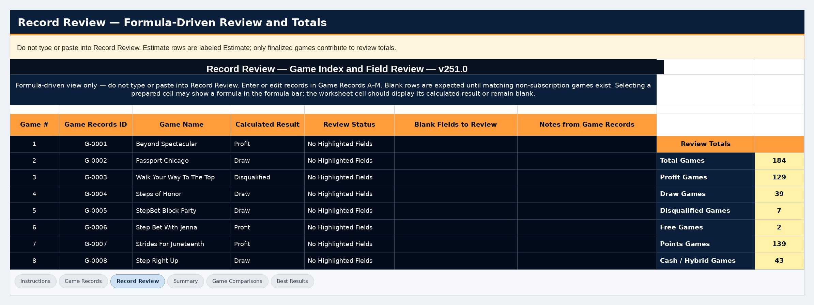
11. Send feedback from Help
Open Help (?), scroll to Guides & Downloads, and tap Write Feedback. The feedback form opens over the Help drawer, so Cancel returns to the same location.
- Enter a question, issue, or suggestion.
- Tap Send Feedback.
- Your email app opens with the recipient, subject, and message prepared.
- Review and send the email, then swipe back to return to StepCat. Help remains open at the same location when the browser preserves the page.
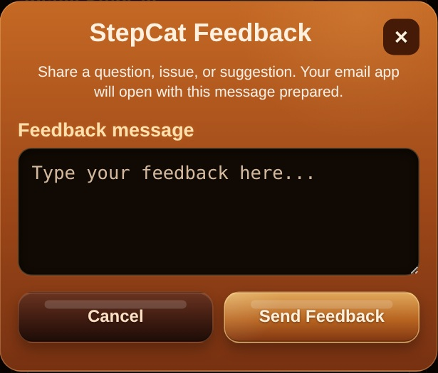
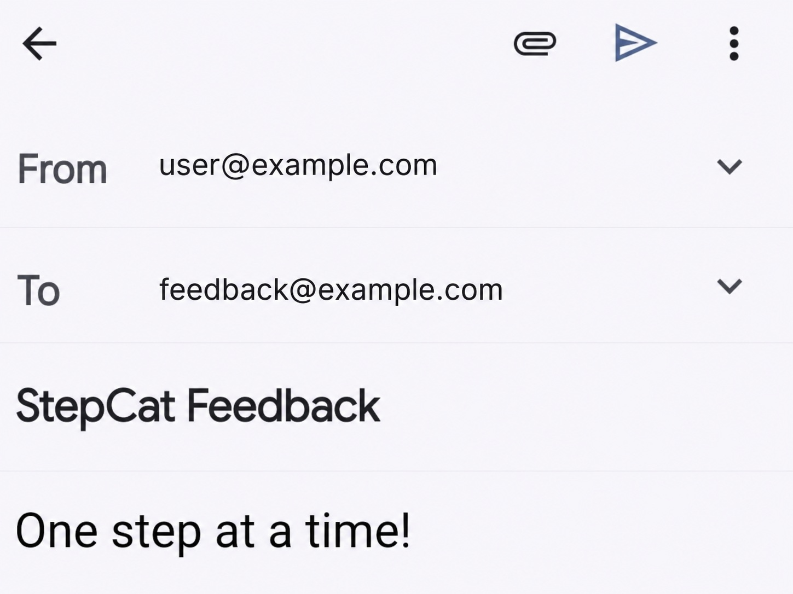
More detail
Open Full DocumentationStepCat is an independent calculation and recordkeeping tool. Estimates are projections; use Finalized mode for official results.